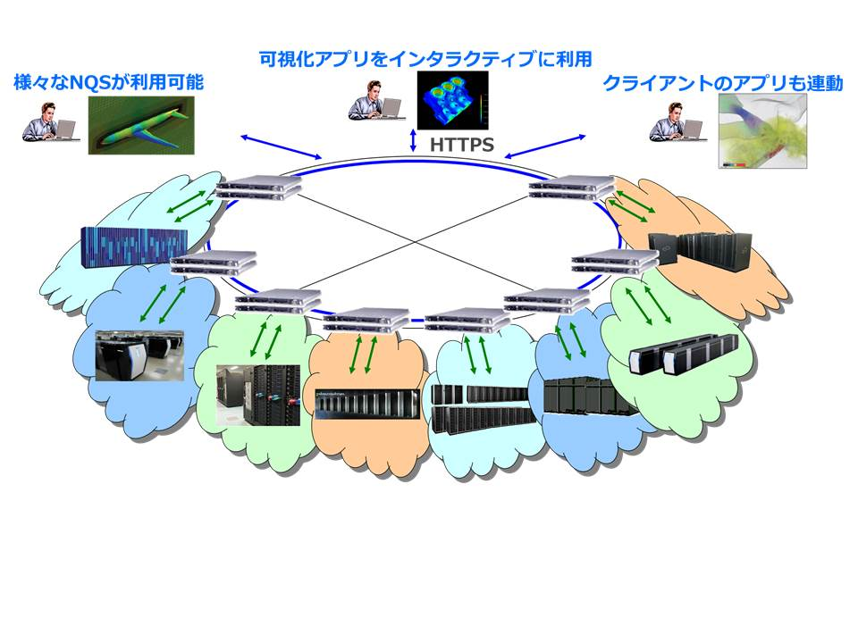

CAE 社内クラウドシステム 『 CAE クラウド 』
CAE 社内クラウドシステム『CAE クラウド』 - 目次
- 概要
概要
『CAE クラウド』は、 研究フロー統合管理システム『 RCM System Software 』を基盤として研究開発向けに開発されたプラットフォームです。CAE業務をクラウド化するとともにプロセスとエンジニアリングデータを自動的にデータベース化できる革新的なソリューションです。専門的な知識なしで、CAE業務の標準化、データベース化及び拠点間を跨ぐデータ・ノウハウの共有を実現する社内クラウドを簡単に立ち上げ、運用することができます。また、運用を継続しながら動的な解析プロセス追加も可能です
